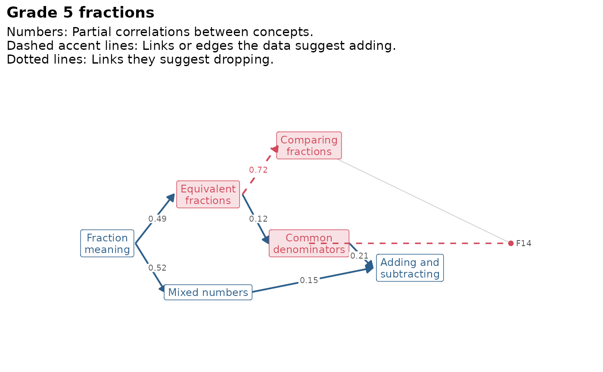

Looks for places where the data disagree with a knowledge graph. Two kinds of evidence are collected.
Usage
mv_kg_fit(
kg,
data,
model = NULL,
min_gap = 0.1,
min_partial = 0.4,
weak_partial = 0.1,
...
)Arguments
- kg
a knowledge graph from
mv_kg_build()oras_mv_kg().- data
a data frame or matrix of item scores (0/1 or ordered categories). Columns that are not items of the graph, such as an ID, are skipped.
- model
optional fitted model from
mv_kg_irt()withstructure = "correlated", to save fitting it again.- min_gap
how much larger (in disattenuated correlation) an item's best unlinked concept must be than its best linked concept before a
wrong_linkflag, and how much smaller a linked concept must be than the item's best linked concept before aweak_linkflag.- min_partial
smallest partial correlation between two concepts with no edge before a
missing_relationflag.- weak_partial
partial correlation below which an existing edge gets a
weak_relationflag.- ...
passed to
mv_kg_irt()when the model is fitted here.
Value
An object of class mv_kg_fit: A list with flags (a tibble
with columns check, level, nodes, message, and the suggested
change in action, from and to), items (the item evidence),
relations (one row per pair of concepts), kg, model and
settings. Use tidy(), glance(), gg_kg_fit() and
mv_kg_refine() on it.
Details
Items. For each item and each concept, the item is correlated with
the rest score of the concept: The mean score on the other items linked
to that concept. Each correlation is divided by the square root of the
rest score's reliability (Spearman-Brown from the mean inter-item
correlation), so that concepts with few items are not put at a
disadvantage. An item that correlates clearly more with a concept it is
not linked to than with any concept it is linked to gets a wrong_link
flag, with a suggestion to move it (or, for an item linked to several
concepts, to add the link). An item linked to several concepts that
correlates clearly less with one of them than with its best one gets a
weak_link flag, with a suggestion to drop that link: Useful for graphs
that link too much, such as drafts from mv_kg_extract(). A concept that
is part of nearly every item, such as a basic operation, can get
weak_link flags on items that truly need it, so read these with the
item in front of you.
Relations. The graph's correlated confirmatory model is fitted with
mv_kg_irt() (or taken from model), and the factor correlations are
turned into partial correlations: The correlation of two concepts once
all other concepts are held constant. Concepts that are directly related
in the learning process keep a clear partial correlation; concepts
related only through others do not. So a large partial correlation
between two concepts with no edge is a missing_relation flag, and an
edge whose partial correlation is near zero is a weak_relation flag.
The suggested direction of a missing prerequisite runs from the concept
whose items are easier to the one whose items are harder; when the two
are about equally hard, a related edge is suggested instead. A
prerequisite whose items are harder than those of the concept it leads
to gets an order flag.
Item links shape the factor correlations, so a wrong link can produce or
hide relation flags. Fix item flags first, refit, and only then act on
relation flags; mv_kg_refine() applies the suggestions you accept.
These are screening heuristics, not tests: The thresholds are rules of thumb, and every flag needs a content expert's judgement.
References
de la Torre, J., & Chiu, C.-Y. (2016). A general method of empirical Q-matrix validation. Psychometrika, 81(2), 253-273.
Marsman, M., Borsboom, D., Kruis, J., Epskamp, S., van Bork, R., Waldorp, L. J., van der Maas, H. L. J., & Maris, G. (2018). An introduction to network psychometrics: Relating Ising network models to item response theory models. Multivariate Behavioral Research, 53(1), 15-35.
See also
mv_kg_check() for checks that need no data; mv_kg_refine();
gg_kg_fit().
Examples
# \donttest{
# the published fractions graph has two planted errors; this takes
# about two minutes because the six-dimensional model is fitted
fit <- mv_kg_fit(fractions_kg, fractions)
fit
#> <mv_kg_fit> Grade 5 fractions: 6 concept(s), 24 item(s), N = 1200
#> 2 review, 0 info
#> * [review] wrong_link: F14 is linked to compare but agrees more with
#> common_denominator (r = 0.48 vs 0.32); move it to common_denominator?
#> * [review] missing_relation: equivalent and compare have no edge but a
#> partial correlation of 0.72; equivalent's items are easier, so add
#> the prerequisite equivalent -> compare?
#> Item links shape the concept correlations: Fix item flags first and
#> refit before acting on relation flags.
gg_kg_fit(fit)

# }
# a quick version on two concepts
kg2 <- mv_kg_subset(fractions_kg, c("meaning", "equivalent"))
fit2 <- mv_kg_fit(kg2, fractions, TOL = 0.01)
#> Warning: Observed log-likelihood may still be increasing.
#> Final log-likelihood values were:
#> -5210.991, -5210.101, -5209.399
tidy(fit2, "items")
#> # A tibble: 8 × 10
#> item linked n_linked best_linked r_linked best_other r_other gap
#> <chr> <chr> <int> <chr> <dbl> <chr> <dbl> <dbl>
#> 1 F01 meaning 1 meaning 0.517 equivalent 0.384 -0.133
#> 2 F02 meaning 1 meaning 0.492 equivalent 0.355 -0.138
#> 3 F03 meaning 1 meaning 0.528 equivalent 0.419 -0.109
#> 4 F04 meaning 1 meaning 0.464 equivalent 0.367 -0.0966
#> 5 F05 equivalent 1 equivalent 0.553 meaning 0.417 -0.136
#> 6 F06 equivalent 1 equivalent 0.539 meaning 0.416 -0.123
#> 7 F07 equivalent 1 equivalent 0.431 meaning 0.369 -0.0621
#> 8 F08 equivalent 1 equivalent 0.653 meaning 0.440 -0.212
#> # ℹ 2 more variables: weakest_linked <chr>, r_weakest <dbl>